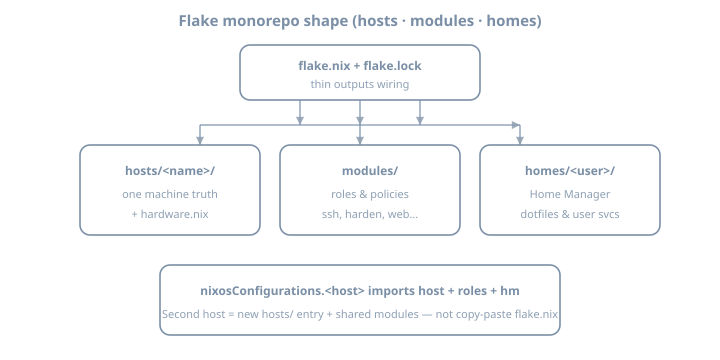

Flake repository layout
Flake repository layout
Goal: Refactor a single-host flake into a hosts / modules / homes layout that stays rebuildable, readable, and ready for multi-host growth—without a 2 000-line flake.nix.
Baseline: NixOS / nixpkgs 26.05, flakes, modern nix CLI. Home Manager is wired in the Home Manager chapter; in this chapter only create the homes/ slot so later imports have a home.
Why this chapter exists
Owning one machine from a flake proves control. Shape is what keeps that control after a second host, a second user, or the first “extract this SSH policy” refactor.
A common failure mode:
flake.nix # 1800 lines of mixed host, packages, users, networking
hardware-configuration.nixThat works until the import graph becomes a ball of yarn. Layout is not aesthetics; it is dependency direction and change-surface control.

Theory 1 — What “layout” means in a flake monorepo
A flake has two layers:
| Layer | Role |
|---|---|
flake.nix outputs |
Thin wiring: inputs → nixosConfigurations, later devShells / checks / packages |
| Module tree | Almost all real config: options + config fragments imported by hosts |
Rule of thumb: if a file is only true for one machine, it lives under hosts/<name>/. If it is true for a role or policy, it lives under modules/. If it is true for a user, it will live under homes/ (Home Manager starts in the next chapters).
Target tree
flake.nix
flake.lock
hosts/
lab/
default.nix # host entry: imports modules + hardware
hardware-configuration.nix
modules/
common/
default.nix # baseline shared by all hosts
nix.nix
users.nix
ssh.nix
networking.nix
roles/
workstation.nix
server.nix
services/
# empty or one tiny service extracted from the monolith
homes/
alice/
default.nix # stub until HM chapter
lib/
default.nix # optional helpers (mkHost, …)
docs/
layout.mdNames are conventions, not law. The invariant is layering, not exact folder names.
Theory 2 — Dependency direction (prevent circular imports)
Think of imports as a DAG:
flake.nix
→ hosts/lab
→ modules/common/*
→ modules/roles/*
→ modules/services/*
→ hardware-configuration
→ (later) homes via HM module| Allowed | Forbidden |
|---|---|
| Host imports modules | Module imports a specific host |
| Role imports common modules | Common imports role |
| Service module is self-contained | Service module reaches into hosts/lab paths |
lib pure helpers used by modules |
lib that evaluates full NixOS configs |
Circular imports fail evaluation with confusing “infinite recursion” or “attribute missing” symptoms. Design the graph before you split files blindly.
What belongs where
| Concern | Place |
|---|---|
networking.hostName, hardware, disk labels |
hosts/<name>/ |
| SSH policy, firewall defaults, time zone, locale | modules/common/ |
| “This is a headless server” package set | modules/roles/server.nix |
| One service option bundle | modules/services/<name>.nix |
| User shell, git, editors | homes/<user>/ |
specialArgs, input plumbing |
flake.nix only |
Theory 3 — Host entry pattern
A host file is a module, not a second flake:
# hosts/lab/default.nix
{ config, pkgs, lib, ... }:
{
imports = [
./hardware-configuration.nix
../../modules/common
../../modules/roles/server.nix
# ../../modules/services/my-timer.nix
];
networking.hostName = "lab";
# Host-only overrides (mkForce / mkDefault as needed)
# services.openssh.openFirewall = true;
}And the flake stays thin:
# flake.nix
{
description = "NixOS lab — hosts/modules/homes layout";
inputs = {
nixpkgs.url = "github:NixOS/nixpkgs/nixos-26.05";
};
outputs = { self, nixpkgs, ... }:
let
system = "x86_64-linux"; # or aarch64-linux
in {
nixosConfigurations.lab = nixpkgs.lib.nixosSystem {
inherit system;
modules = [
./hosts/lab
];
# specialArgs = { inherit inputs; }; # when modules need inputs
};
};
}default.nix vs explicit path
Importing ./hosts/lab loads ./hosts/lab/default.nix. Prefer that over listing every leaf in flake.nix.
specialArgs vs module arguments
| Mechanism | Use |
|---|---|
specialArgs = { inherit inputs; } |
Pass flake inputs into all host modules |
_module.args |
More advanced; avoid until needed |
import of pure lib/ |
Helpers that need no config |
Do not thread half the world through specialArgs “just in case.” Add when a module actually needs an input (Home Manager, sops-nix, …).
Theory 4 — Module “barrel” files
modules/common/default.nix re-exports fragments:
# modules/common/default.nix
{
imports = [
./nix.nix
./users.nix
./ssh.nix
./networking.nix
];
}Benefits:
- Hosts import one common entry
- You can still open a single policy file for review
- Diffs stay small when only SSH changes
Refactor behavior-preserving first: cut → import → rebuild → only then change options. Never mix layout moves with hardening or new services in one commit.
Optional deeper split
modules/common/
default.nix
nix.nix
users.nix
ssh.nix
networking.nix
locale.nix
time.nixSplit when a file exceeds ~150 lines or two people edit conflicting concerns—not on principle alone.
Theory 5 — Hardware config and purity
hardware-configuration.nix is host-local (UUIDs, firmware). Do not share it across machines.
| Practice | Why |
|---|---|
Keep under hosts/<name>/ |
Machine-specific |
Generated by installer / nixos-generate-config |
Not hand-invented blindly |
| Import only from that host | Avoid wrong disk UUIDs |
Optional lib/mkHost helpers can wait until you have three hosts—prefer an obvious explicit nixosSystem until then.
Before → after: a monolith configuration.nix pointed from flake.nix; after, flake.nix points at ./hosts/lab, which imports hardware + modules/common (+ roles/services). Same behavior; smaller change surface.
Theory 6 — Roles vs common vs services
| Kind | Semantics | Example |
|---|---|---|
| common | True for nearly every host | flakes enabled, base SSH policy |
| role | Class of machine | server.nix disables Bluetooth; workstation.nix enables NetworkManager |
| service | One workload option bundle | modules/services/caddy.nix |
# modules/roles/server.nix
{
imports = [ ../common ];
# server-lean defaults
# hardware.bluetooth.enable = false;
# services.printing.enable = false;
}Hosts compose roles; roles compose common. Services are imported by hosts or roles when that workload is on.
Theory 7 — Multi-host readiness (without building the second machine)
Sketch without wiring a non-bootable config:
hosts/
lab/
spare/ # optional empty skeleton
default.nix # imports common + own hardware later# flake.nix (future)
nixosConfigurations = {
lab = nixpkgs.lib.nixosSystem { … modules = [ ./hosts/lab ]; };
# spare = nixpkgs.lib.nixosSystem { … modules = [ ./hosts/spare ]; };
};Do not invent fake hardware UUIDs “for symmetry.” Document the intended second host in docs/layout.md instead.
Theory 8 — Relative paths and flake root
After moves, relative imports break silently until eval:
| From | Import |
|---|---|
hosts/lab/default.nix |
../../modules/common |
modules/common/ssh.nix |
no host paths |
flake.nix |
./hosts/lab only |
Avoid absolute /home/you/... imports. Flake evaluation should work from any clone path.
Worked example — Minimal SSH + users + nix split
# modules/common/ssh.nix
{ lib, ... }:
{
services.openssh = {
enable = true;
settings = {
PasswordAuthentication = false;
KbdInteractiveAuthentication = false;
PermitRootLogin = "no";
};
};
}# modules/common/users.nix
{ pkgs, ... }:
{
users.users.alice = {
isNormalUser = true;
extraGroups = [ "wheel" ];
openssh.authorizedKeys.keys = [
"ssh-ed25519 AAAA...REPLACE_WITH_YOUR_PUBLIC_KEY alice@lab"
];
};
}# modules/common/nix.nix
{
nix.settings = {
experimental-features = [ "nix-command" "flakes" ];
};
nixpkgs.config.allowUnfree = false;
}# modules/common/networking.nix
{
# hostName stays on the host; put only shared defaults here
networking.firewall.enable = true;
time.timeZone = "UTC"; # or your zone
}# hosts/lab/default.nix
{ ... }:
{
imports = [
./hardware-configuration.nix
../../modules/common
];
networking.hostName = "lab";
system.stateVersion = "26.05"; # keep your real stateVersion
}Worked example — Thin flake with optional lib
# lib/systems.nix
{
defaultSystem = "x86_64-linux";
}# flake.nix
{
description = "NixOS lab";
inputs.nixpkgs.url = "github:NixOS/nixpkgs/nixos-26.05";
outputs = { self, nixpkgs, ... }:
let
inherit (import ./lib/systems.nix) defaultSystem;
in {
nixosConfigurations.lab = nixpkgs.lib.nixosSystem {
system = defaultSystem;
modules = [ ./hosts/lab ];
};
};
}Keep lib/ free of full system evaluation until you know you need it.
Exercises
Exercise 1 — Inventory the monolith
cd /path/to/your-flake
find . -name '*.nix' | sort
wc -l flake.nix configuration.nix hosts/*/*.nix 2>/dev/null || trueJournal:
- List every concern in the big file (users, SSH, packages, networking, …)
- Mark each as host / common / role / service / user
- Note any absolute paths or secrets (flag secrets for the secrets chapters—do not leave plaintext passwords in git)
Exercise 2 — Create the directory skeleton
mkdir -p hosts/lab modules/common modules/roles modules/services homes/alice lib docsMove hardware config:
# adjust names to your layout
mv hardware-configuration.nix hosts/lab/ 2>/dev/null || true
cp configuration.nix /tmp/configuration.nix.bak 2>/dev/null || trueExercise 3 — Split common modules
Create ssh.nix, users.nix, nix.nix, networking.nix, and the barrel default.nix from the worked examples. Replace keys and usernames with yours—public keys only.
Exercise 4 — Host entry + thin flake
Write hosts/lab/default.nix. Point flake.nix at ./hosts/lab only. Remove or stop importing the old monolith path.
Exercise 5 — Build before switch
nixos-rebuild build --flake .#lab
sudo nixos-rebuild switch --flake .#labVerify:
hostname
systemctl is-active sshd
nixos-versionIf something broke: roll back, fix one module, retry.
Exercise 6 — Document the tree
Write docs/layout.md:
flake.nix → outputs only
hosts/lab → hostname, hardware, host overrides
modules/common → shared policy
modules/roles → (empty or one role)
modules/services → extracted service if any
homes/alice → Home Manager chaptersExercise 7 — Role extract (optional stretch)
Move 2–3 server-lean settings into modules/roles/server.nix and import from the host. Rebuild. Confirm behavior unchanged.
Exercise 8 — Path-break drill
Temporarily wrong a relative import (../common instead of ../../modules/common). Run nixos-rebuild build, read the error, fix. Note the message for future you.
Exercise 9 — Diff against backup
# conceptual: compare options that matter
diff -u /tmp/configuration.nix.bak hosts/lab/default.nix | head -80 || trueList any intentional deltas; there should be none for a pure layout move.
Exercise 10 — Second-host skeleton (docs only)
Write five lines in docs/layout.md about what a second host would import. Do not invent hardware.
Exercise 11 — Secrets flag list
From Exercise 1, list every sensitive-looking string. Either remove now or ticket for secrets chapters. No live tokens in git.
Exercise 12 — Commit hygiene
git add hosts modules homes lib docs flake.nix flake.lock
git status
git commit -m "flake: hosts/modules/homes layout (behavior-preserving)"Prefer one commit for layout-only moves.
Common gotchas
| Symptom / mistake | What to do |
|---|---|
| Infinite recursion after split | Module imports a host or config cycle; straighten the DAG |
error: path '…' does not exist |
Relative paths wrong after move; re-check ../../modules |
Flake still points at old configuration.nix |
Update modules = [ ./hosts/lab ]; |
| Hardware UUIDs missing | Moved hardware file but forgot to import it |
| “Works on eval, fails on boot” | Bootloader/filesystem only in hardware host file—verify |
Mixed absolute /home/you/... imports |
Use flake-relative paths only |
| Giant PR of layout + features | Split commits: move-only first |
stateVersion changed “to match release” |
Do not casual-bump; keep original |
| Barrel forgets a file | Missing policy after split—add to imports |
| Role imports host | Invert: host imports role |
Checkpoint
- Directory tree matches hosts / modules / homes (homes may be stub)
flake.nixis thin wiring, not the bulk of confignixos-rebuild switch --flake .#lab(or your hostname) succeeds- Import graph has no host→module reverse deps
- Layout documented in
docs/layout.md - Behavior roughly matches pre-refactor host
- No plaintext secrets introduced during the move
- stateVersion unchanged unless you know why
Journal (optional)
Write three personal gotchas before continuing—especially path errors and anything you almost put in the wrong plane.